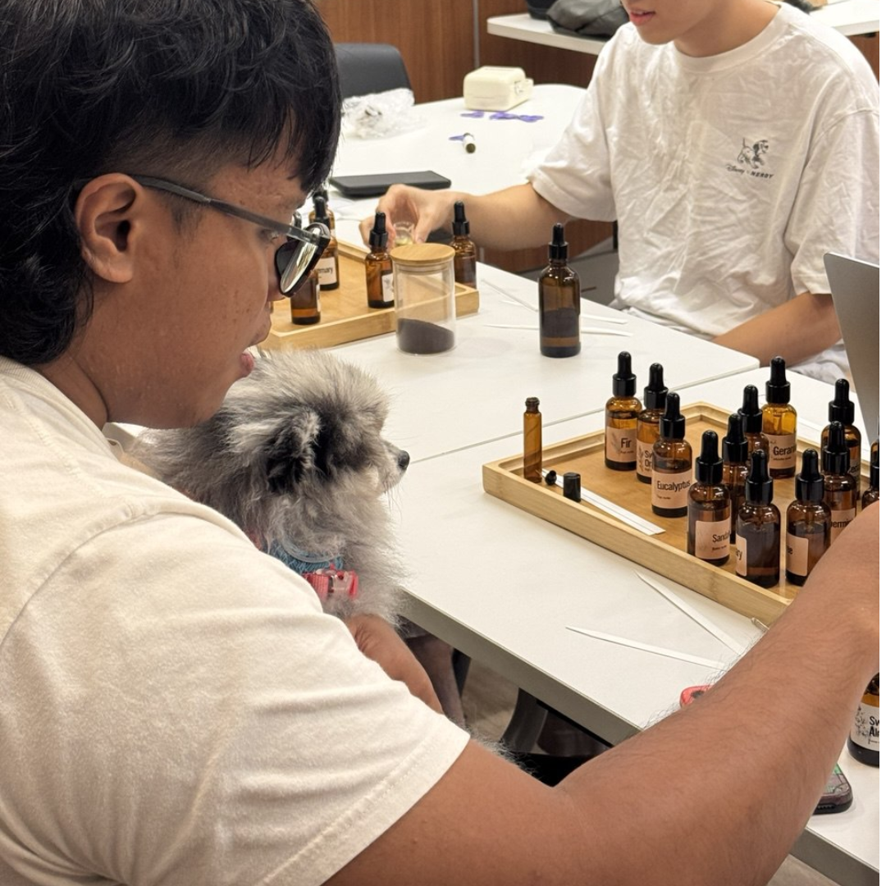
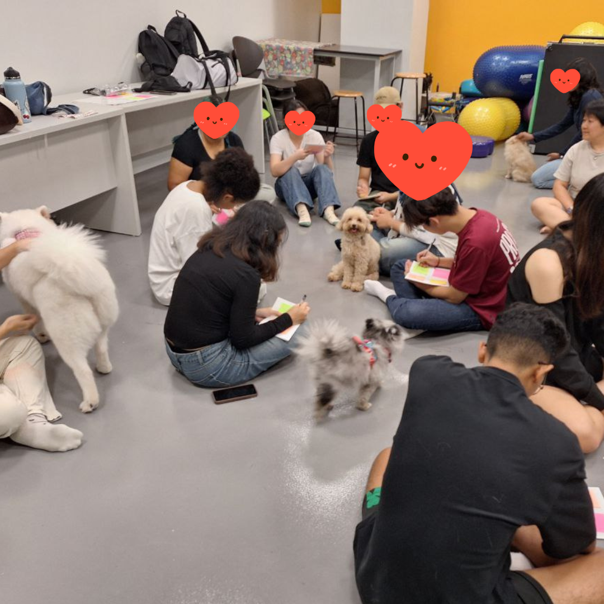
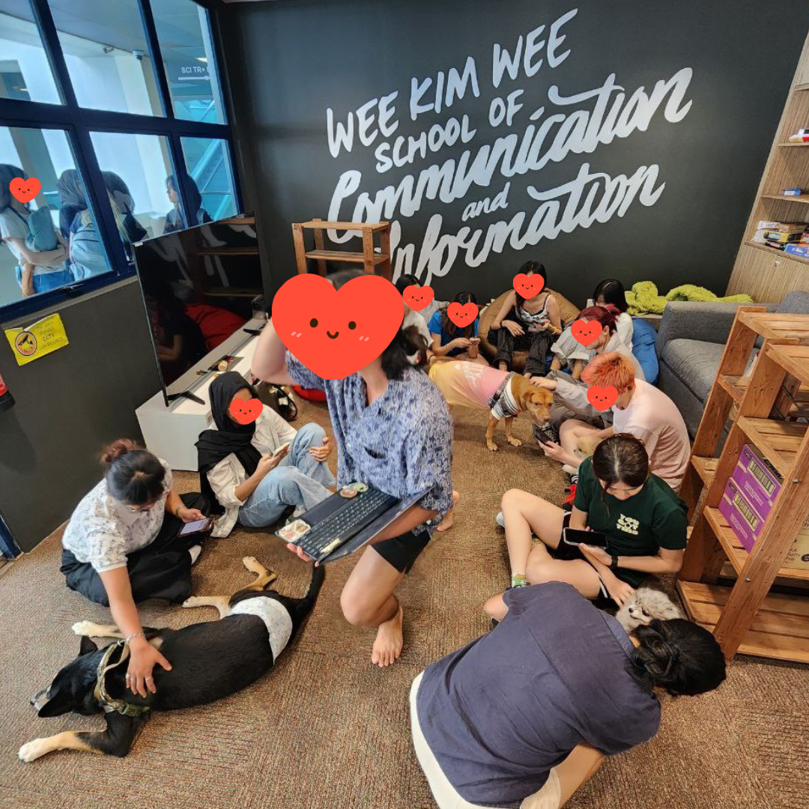

Animal-Assisted Activities
What are Animal-Assisted Activities (AAA)?
Animal Assisted Activities (AAA) are informal, motivational, educational, or recreational interactions between trained volunteers (with animals) and people, designed to improve quality of life. Unlike therapy, AAA is not goal-specific, has no predetermined treatment plan, often delivered in environments like hospitals, schools, or nursing homes.
Key Benefits
- Reducing Stress and Anxiety
- Providing Emotional Support
- Boosting Self-esteem
- Improving Social Skills
Want to work together?



Why Animal-Assisted Activities?
Animal-Assisted Activities create opportunities for meaningful interaction, emotional connection, and experiential learning through guided engagement with animals. These sessions are designed to support well-being in a safe and engaging environment, while encouraging participants to build confidence, empathy, communication, and social connection.
For many individuals, animals can help create a calming and non-judgemental space that encourages participation and interaction in ways that traditional settings may not. Whether through simple moments of touch, observation, play, or shared activities, participants are often encouraged to express themselves more openly and engage more actively with those around them.
Our programmes are adapted across different age groups and community profiles, including preschools, schools, seniors, persons with additional needs, and community groups. Sessions may include guided interaction, psychosocial learning, animal care education, reflective activities, sensory engagement, and facilitated group experiences depending on the intended outcomes of the programme.